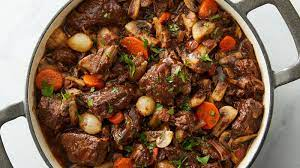

Recette du boeuf bourguignon
Le bœuf bourguignon est une recette de cuisine d'estouffade de bœuf, considerée à tort comme étant traditionnelle de la cuisine bourguignonne, en France.
Réaliser moiRecette de dindes farcie
La dinde aux marrons est un mets traditionnel du repas de Noël, en France et en Suisse romande ainsi qu'en Royaume-Uni où souvent plusieurs farces sont employés en combinaison avec cette farce (telle qu'une farce de sauge et oignon ou de persil, citron et thym)..
Réaliser Moi
Recette de rôti de porc
Le rôti de porc est un plat principal à base de porc braisé. Il est généralement accompagné de pommes de terre et d'autres légumes qui ont été cuits au four dans le jus de la viande
Réaliser Moi